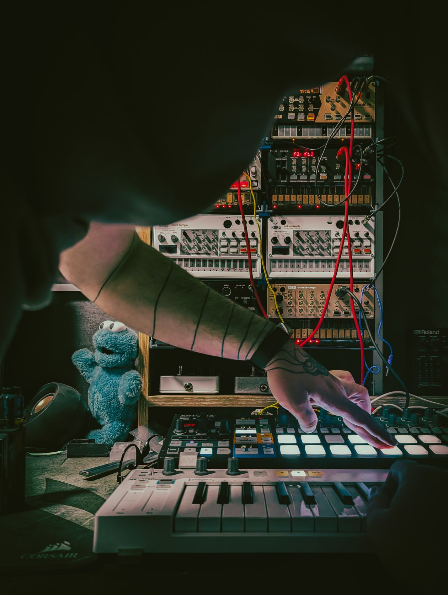

Analogue machines, digital deadlines.
I'm Renata Voss. I write synthwave scores and sync tracks for games, film trailers and title sequences — composed on analogue synthesizers and drum machines, printed to audio early, and delivered as masters, stems and documented loops that a developer or editor can drop straight onto a timeline. The patches are printed, the loop points are written down, and the demo sketch lands in your inbox within 48 hours.

Five cues. Press play — this is the actual synth.
There are no audio files on this page. The player is a subtractive synthesizer running in your browser — sawtooth bass with a square sub-oscillator, a square-wave arpeggio, detuned pad chords, and a drum kit built from a sine drop and filtered noise, all through one lowpass filter. Each cue's patch sheet is printed beside it, exactly as it sits in the studio notebook, and the cutoff fader is live: drag it while a cue plays and you are turning the same control I turn when a client asks for a cue "darker" or "brighter". Sound starts only when you press play.
Patch sheet
| OSC A/B | Sawtooth ×2, detune +6¢ |
|---|---|
| SUB | Square, −1 octave |
| VCF | 24 dB/oct lowpass · cutoff 1.8 kHz · resonance Q 9 |
| ENV | A 0.01 · D 0.24 · S 0.35 · R 0.28 |
| FX | ⅜-note delay, feedback 0.32 |
| DRUMS | Four-on-floor kick · noise snare · offbeat hats |
One filter carries the whole mix, as it does on the hardware. The patch sheet's printed cutoff is the starting point — the fader overrides it until you change cue.
What you are hearing, plainly: these are browser synthesis demonstrations, not studio masters. The patches, arrangements and note data are the production ones; in the studio they are played on analogue hardware and delivered as 24-bit WAV. Judge the writing, the patches and the tempos here — the recording quality is what the demo sketch is for.
The register — data first, adjectives later.
Every delivered or licensable cue, with the numbers a music supervisor or audio director actually asks for. Catalogue tracks marked Available can be licensed as-is; everything else was written to commission and shows the shape of the work.
| Title | Commission | BPM | Key | Length | Year | Status |
|---|---|---|---|---|---|---|
| Night Freeway | Trailer cue — motoring drama | 105 | D minor | 1:30 | 2025 | Licensed |
| Vector Coast | Game score — Neon Drifts (racing) | 118 | A minor | 6 loop sets | 2025 | Delivered |
| Chrome Orchard | Title theme — streaming drama | 92 | F major | 0:45 + sting | 2024 | Broadcast |
| Static Bloom | Sync library — technology & science | 100 | C minor | 2:48 | 2024 | Available for licence |
| Midnight Toll | Game score — night-driving horror | 124 | E minor | 8 loop sets | 2026 | In production |
| Paper Moon Drive | Sync library — travel & lifestyle | 86 | G major | 3:12 | 2023 | Available for licence |
Three of these are written up in full — brief, patch decisions, and what shipped — on the case studies page.
Fees, printed. No "contact for pricing".
Starting points for the four ways this studio gets hired. Final quotes are fixed in writing before work starts and depend on the things listed under the card — never on how the negotiation feels.
Non-exclusive licence of an existing track (Static Bloom, Paper Moon Drive) for online and social use, one-year term, worldwide. Broadcast, paid media and longer terms priced from the same card.
A custom cue cut to your edit, delivered as the full 90-second version plus 30- and 15-second cutdowns and a 5-second button, with stems. Two revision rounds included.
Minimum project £2,400. Loops are written as loops — sample-accurate, with documented loop points and intensity stems for adaptive mixing — not full tracks with the ends chopped off.
Main title (30–60 s), a 5-second sting, a recap bed and a clean instrumental, delivered to broadcast loudness spec with the cue sheet filled in.
What moves the price: exclusivity (a track nobody else can use costs two to three times a shared licence) · term and territory · paid-media use · a full buyout of the master · stem count and adaptive layers on game work · and the deadline — delivery inside 72 hours carries a 25% rush fee, agreed before the clock starts.
Four stages, each with something you can hear.
Brief & references
You send the picture, the build, or the timing sheet, plus two or three reference tracks and the deadline. I reply with questions, not a quote — the quote comes once the shape is clear.
Demo sketch — 48 hours
One patch, one arrangement, 30–60 seconds, against your picture or level. If the sketch is wrong, we change direction here, where it is cheap — this stage is free on trailer and game commissions.
Production on hardware
The approved sketch is rebuilt on the analogue machines and printed to audio in full takes. Two revision rounds are included; revision notes come back as timed comments, not vibes.
Delivery, documented
Masters, stems, loop documentation and loudness figures, in a folder structure your editor or audio programmer can use without emailing me. Full details on the studio page.
Attached to the work it describes.
"Renata rebuilt the score around the race structure instead of fighting it — the loops breathe with the laps, the intensity stems made our adaptive mix a day's work instead of a week's, and every loop point arrived written down. We shipped on the date we announced."
Next full game-score slot: March 2026.
Trailer cues and catalogue licences are taken year-round. Demo sketches within 48 hours of a brief.